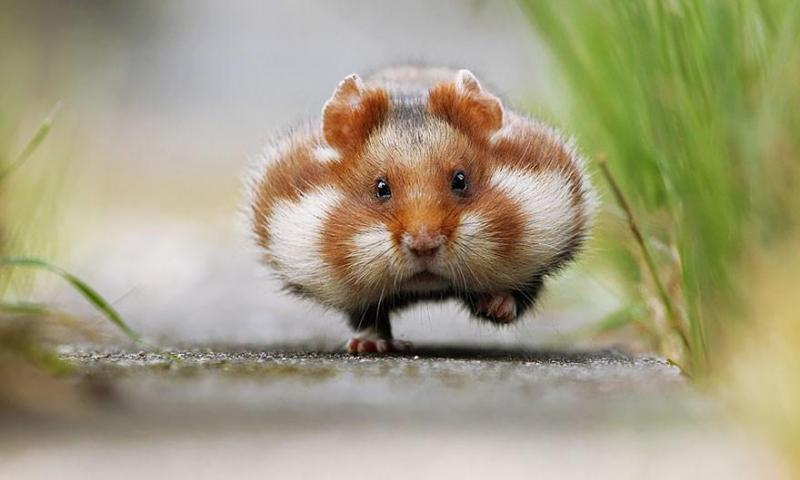
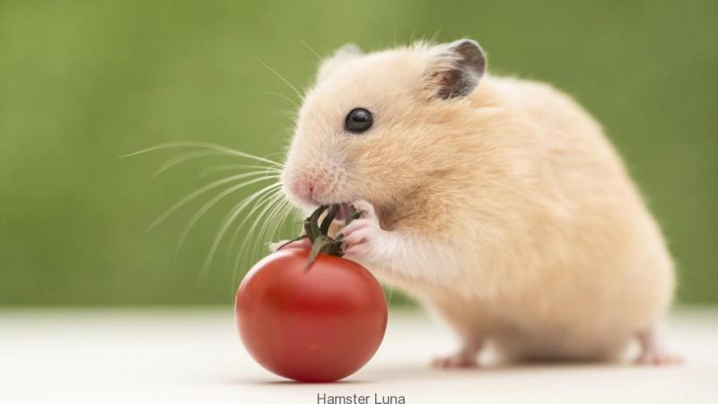

Chuột Xascoto
中国語の発音で、注音符号の音節間にスペースがあるものと無いものが混在しているようです。またスペースも、半角と全角が見られます。注音符号の分かち書きについて、書き方を統一したほうがよいのでしょうか。皆様の意見をお聞きしたく思います。 私は分かち書きをするべきだと考えます。分かち書きをしなければ、たとえば「ㄕㄨㄤˋ」がshīwàngであるのかshuàngであるのか区別がつかなくなるからです。分かち書きをするとしてスペースを半角にするか全角にするかは意見を述べるに足りる知識がありません。 日本語版ウィクショナリーで私が見てきた記事では全角スペースを使っているものが多かったように思います。一方でウィキペディアでは半角スペースを多く見る気がします。 （新参者のため、間違ったことをしていないかたいへん不安に思っています。ウィクショナリーの発展に貢献したいので、間違いをご指摘いただければ幸いです。）--奈愚 (トーク) 2017年8月31日 (木) 06:37 (UTC)

中国語の発音で、注音符号の音節間にスペースがあるものと無いものが混在しているようです。またスペースも、半角と全角が見られます。注音符号の分かち書きについて、書き方を統一したほうがよいのでしょうか。皆様の意見をお聞きしたく思います。 私は分かち書きをするべきだと考えます。分かち書きをしなければ、たとえば「ㄕㄨㄤˋ」がshīwàngであるのかshuàngであるのか区別がつかなくなるからです。分かち書きをするとしてスペースを半角にするか全角にするかは意見を述べるに足りる知識がありません。 日本語版ウィクショナリーで私が見てきた記事では全角スペースを使っているものが多かったように思います。一方でウィキペディアでは半角スペースを多く見る気がします。 （新参者のため、間違ったことをしていないかたいへん不安に思っています。ウィクショナリーの発展に貢献したいので、間違いをご指摘いただければ幸いです。）--奈愚 (トーク) 2017年8月31日 (木) 06:37 (UTC) egestas.